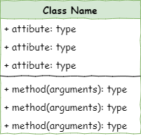
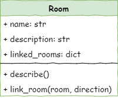

Stage 1 - Create Rooms#
Introduction#
In this lesson we will create three rooms and link those rooms together. Below is a rough map of our dungeon.

To achieve this we will need to create two files:
main.py→ runs the programroom.py→ stores information about theRoomclass
In those two files we will complete the following steps:
Define the
RoomclassCreate
RoomobjectsDescribe
RoomobjectsLink the
RoomobjectsInclude the linked
Roomsin the description of eachRoomobject
Class diagram#
We will be using Universal Modelling Language (UML) class diagrams to show the different classes of our program and how they work together.
In UML, classes are represented by the three row table.

The class name goes in row 1
All the class attributes go in row 2, along with their datatype
The class methods are shown in row 3, along with the arguments and datatype of any returned value
The case diagram for the Room class is as follows:

From the diagram we can tell:
The class name is
RoomThe attributes are:
namewhich is a string datatypedescriptionwhich is a string datatypelinked_roomswhich is a dictionary
The methods are:
describewhich takes no arguments and returns no valueslink_roomwhich returns nothing and takes two arguments:roomdirection
Define the Room class#
Open up Thonny and, if needed, create a new file.
Then type the code below into the new file
1# room.py
2
3class Room():
Lets unpack the code:
# room.py- is a simple comment containing the file name. Since this program involves multiple files, this is a simple way to keep track of which file you are currently working on.class Room():- defined theRoomclass object
Naming conventions
In most cases, Pythons naming conventions call for names to be written in snake_case, but class names are an exception to this rule. Class names should use CamelCase, like Room in our code.
Since this is a convention, and won’t raise an error if not follow it. This is about maintainabilty and ensuring your code is easy to follow.
Also note that our file name is not capitalised. This is import for when we import our class.
Dunder init method#
All Python classes have a special method called the dunder init. The actual method name is __init__, which is double-underscore init double underscore, hence the name dunder init.
The dunder init is a method that is automatically called whenever an object of the class is created. It is used to initialize the attributes of the object. It can also be used to perform any other setup that the object needs before it is used, including calling other methods.
Let’s create our dunder init for our Room class by adding the highlighted code below.
1# room.py
2
3class Room():
4
5 def __init__(self, room_name):
6 # intialise the room object
7
8 self.name = room_name.lower()
9 self.description = None
Breaking that code down:
def __init__(self, room_name):→ defines the dunder init methodself→ always the first argument in class methods.Since classes can be used to create many instances of the object,
selftells Python that you are referring to this instance of the object.For example, when we create the cavern room object,
selfwill be referring to the cavern room.When narrating the code, I find it useful to substitute
selfwith this object.
room_name→ a string containing the name of the room, that needs to be passed when theRoomobject is made.
# intialise the room object→ a comment that explains what the method does. Explaining your methods is another way of increasing the readability of your code and enhances it’s maintainability.self.name = room_name.lower()→ assigns the value passed in theroom_nameargument to the object’s attribute room_nameself.name→ using my substitution trick, this means “This object’s name”, or “This room’s name”room_name.lower()→ coverts the string passed in the argument to all lower case before assigning it toself.name
self.description = None→ creates the objects description attribute and assignsNoneto it.self.description→ using my substitution trick, this means “This object’s description” or “This room’s description”it is best practice to define all the class attributes in
__init__when the attribute value is assigned after the object has been created initiate the value of
Noneto the attribute in the__init__
Save room.py#
Saving files
Since this program will be using multiple files, the location they are saved is important.
The main.py file will be importing classes from the your other files. The first place it will look is within the local directory (ie. the folder it is saved in).
To minimise potential problems, you need to create a new folder for these tutorials.
It is also important to ensure you file names are correct, inlcuding the capilatisation and the .py extension.
Make a folder called deepest_dungeon. Calling your room.py save it in your deepest_dungeon folder.
Create Room objects#
Create a new file. Save it as main.py in your deepest_dungeon folder. This file is going to control our game.
Then type to following code into the *main.py
1# main.py
2
3from room import Room
4
5# create rooms
6cavern = Room("Cavern")
7
8armoury = Room("Armoury")
9
10lab = Room("Laboratory")
11
12print(cavern.name)
We’re going to run our program for the first time, but before let’s introduce the PRIMM concept.
PRIMM
Throughout this course we will use the PRIMM process to reinforce our learning. PRIMM stands for Predict, Run, Investigate, Modify, and Make. It reflects effective programming practices and encourages curiosity in programming.
Predict: Before you run the code you need to predict what you think will happen. Go ahead and have a guess at what you think will happen.
Run: Then run the program and see how accurate your prediction was. If your prediction was incorrect, how was the result different?
Investigate: Go through the code and work out what each line of code does.
Modify: Edit the code. Change it around and see that results your get
Make: Use your new understanding of the code to make a different program.
Lets run through the PRIMM process now
Predict in detail what you think the program will do, then run the program.
Let’s investigate the code, by breaking it down line-by-line.
# main.py→ a simple comment which helps identify which file you are currently working in.from room import Room→ familiar import statement, but this time we are importing our own moduleRoom→ theRoomclass that we just maderoom→ the Python file which contains theRoomclass, in our caseroom.pythis line effectively says → from
room.pyimport theRoomclassnote the capitalisation → by using snake case for our file name and camel case for our class name, we can distinguish between the two.
# create rooms→ a comment to help structure the code.main.pywill become quite long. Structuring the code with comments will improve its readability.
cavern = Room("Cavern")→ instantiates (creates) our firstRoomobjectRoom("Cavern")→ creates aRoomobjectwhen we create a
Roomobject the__init__automatically runsthe
__init__requires a single argument to be passed, we pass"Cavern"the
__init__then takes the"Cavern"string and assigns it to thenameattribute of this object
cavern =→ assigns our newly createdRoomobject to the variablecavern
armoury = Room("Armoury")→ creates a differentRoomobject"Armoury"is passed to thenameattributethis object is assigned to
armoury
lab = Room("Laboratory")→ creates a thirdRoomobject"Laboratory"is passed to thenameattributethis object is assigned to
lab
print(cavern.name)- prints the name of thecavernRoomobjectcavern.name- get the value stored in thenameattribute of thecavernRoomobjectprint- print that value to the terminal
Modify the code so that it prints the names of the other two Room objects.
Describe Room objects#
If we look at the Room class we will notice that there is a description attribute which currently stores None.
1# room.py
2
3class Room():
4
5 def __init__(self, room_name):
6 # intialise the room object
7
8 self.name = room_name.lower()
9 self.description = None
We want our Room objects to have descriptions, so let’s assign some values to them.
1# main.py
2
3from room import Room
4
5# create rooms
6cavern = Room("Cavern")
7cavern.description = "A room so big that the light of your torch doesn’t reach the walls."
8
9armoury = Room("Armoury")
10armoury.description = "The walls are lined with racks that once held weapons and armour."
11
12lab = Room("Laboratory")
13lab.description = "A strange odour hangs in a room filled with unknownable contraptions."
14
15print(cavern.name)
16print(cavern.description)
Predict in detail what you think the program will do, then run the program.
Let’s investigate the new code line-by-line.
cavern.description = "A room so big that the light of your torch doesn’t reach the walls."directly accesses the
descriptionattribute for thecavernRoomobjectassigns the string to the
descriptionattribute of thecavernRoomobject
armoury.description = "The walls are lined with racks that once held weapons and armour."assigns the string to the
descriptionattribute of thearmouryRoomobject
lab.description = "A strange odour hangs in a room filled with unknownable contraptions."assigns the string to the
descriptionattribute of thelabRoomobject
print(cavern.description)accesses the value stored in the
descriptionattribute of thecavernRoomobjectprints that value to the terminal
Modify the code so that it prints the descriptions of the other two Room objects.
Describe method#
It is good programming practice to not directly access an object’s attributes. You will notice that in our UML Class Diagram the Room class has a describe() method.
Creating methods is a better way of accessing object’s attributes. So let’s add the describe() to our code.
Go back to the room.py file and add the highlighted code below.
1# room.py
2
3class Room():
4
5 def __init__(self,room_name):
6 # initialises the room object
7 self.name = room_name.lower()
8 self.description = None
9
10 def describe(self):
11 # displays a description of the room in the UI
12 print(f"\nYou are in the {self.name}")
13 print(self.description)
Then go back to main.py and replace lines 15 and 16 with the highlighted code below.
1# main.py
2
3from room import Room
4
5# create rooms
6cavern = Room("Cavern")
7cavern.description = "A room so big that the light of your torch doesn’t reach the walls."
8
9armoury = Room("Armoury")
10armoury.description = "The walls are lined with racks that once held weapons and armour."
11
12lab = Room("Laboratory")
13lab.description = "A strange odour hangs in a room filled with unknownable contraptions."
14
15# describe rooms
16cavern.describe()
17armoury.describe()
18lab.describe()
Predict in detail what you think the program will do, then run the program.
Let’s investigate the new code line-by-line. First the code in room.py:
def describe(self):→ defines thedescribemethoddef→ methods are functions that exist within a class, therefore thedefkeyword is used to define methods.describe→ this is the name of our method(self)→selfis the first argument for all methods. Just like with the__init__method,selfcan be read as “this object”:indicates a following indented code block.take note of the level of indentation. All class methods need to be indented one level (same as the
__init__method)
# displays a description of the room in the UI→ explains what the method doesthis is good coding practice and improves the readability of your code
print(f"\nYou are in the {self.name}")takes the
nameattributes and inserts it into an f-stringprints the f-string to the terminal
again, using the
selfsubstitution,self.nameshould read as this room’s name
print(self.description)→ prints to terminal the value stored in thedescriptionattribute
Now the code in main.py
# describe rooms→ another code structure commentcavern.describe()→ run thedescribemethod for thecavernRoomobjectarmoury.describe()→ run thedescribemethod for thearmouryRoomobjectlab.describe()→ run thedescribemethod for thelabRoomobject
Link rooms#
If you look at our map you will notice that the rooms are linked, so that our adventure can move between them.
Cavern ↓ Armoury
Armoury ↑ Cavern
Armoury → Lab
Lab ← Armoury
Our class diagram shows we use an attribute (linked_rooms) and a method (link_room(room, direction)) to model this.
How will this work?
The linked_rooms is a dictionary, so it stores key:value pairs. The key will be the direction (north, south, east or west), and the value will be the Room object that is in that direction. For example, the linked_rooms dictionary for the Armoury would be:
1{
2 "north" : cavern,
3 "east" : lab
4}
The link_room method will take two arguments (room and direction) and add that key value pair to the linked_rooms attribute.
So lets implement this. First go back to room.py, and add the code highlighted below
1# room.py
2
3class Room():
4
5 def __init__(self,room_name):
6 # initialises the room object
7 self.name = room_name.lower()
8 self.description = None
9 self.linked_rooms = {}
10
11 def describe(self):
12 # displays a description of the room in the UI
13 print(f"\nYou are in the {self.name}")
14 print(self.description)
15
16 def link_rooms(self, room_to_link, direction):
17 # links the provided room, in the provided direction
18 self.linked_rooms[direction.lower()] = room_to_link
Then open the main.py and add the code highlighted below:
1# main.py
2
3from room import Room
4
5# create rooms
6cavern = Room("Cavern")
7cavern.description = "A room so big that the light of your torch doesn’t reach the walls."
8
9armoury = Room("Armoury")
10armoury.description = "The walls are lined with racks that once held weapons and armour."
11
12lab = Room("Laboratory")
13lab.description = "A strange odour hangs in a room filled with unknownable contraptions."
14
15# link rooms
16cavern.link_rooms(armoury,"south")
17armoury.link_rooms(cavern,"north")
18armoury.link_rooms(lab,"east")
19lab.link_rooms(armoury,"west")
20
21# describe the rooms
22cavern.describe()
23armoury.describe()
24lab.describe()
Predict in detail what you think the program will do, then run the program.
Did you predict that nothing would change? We’ll fix that later. In the meanwhile, let’s investigate the new code line-by-line.
First the code in room.py:
self.linked_rooms = {}→ creates an empty dictionary for thelinked_roomsattributedef link_rooms(self, room_to_link, direction):→ defines thelink_roomsmethod with three argumentsself→ the first argument for all class methods is alwaysself, which refers to this objectroom_to_link→ theRoomobject that you will be linking todirection→ the values ofnorth,south,eastorwestwhich will be the key for in the dictionary
# links the provided room, in the provided direction→ comment explaining what the method doesself.linked_rooms[direction.lower()] = room_to_link→ adds a new value to thelinked_roomsattributedirection.lower()→ takes thedirectionargument and makes it all lower caseself.linked_rooms[direction.lower()]→ checks thelinked_roomdictionary for thedirectionkey= room_to_linkif the
directionkey doesn’t exists, adds a key:value pair ofdirection:room_to_linkif the
directionkey exists, changes the current value toroom_to_link
Then in main.py:
# link rooms→ code structuring commentcavern.link_rooms(armoury,"south")→ links thecavernand thearmouryto the"south"of it.armoury.link_rooms(cavern,"north")→ links thearmouryand thecavernto the"north"of it.armoury.link_rooms(lab,"east")→ links thearmouryand thelabto the"east"of it.lab.link_rooms(armoury,"west")→ links thelaband thearmouryto the"west"of it.
Notice that each connection needs two calls to the link_rooms method.
Include linked Rooms in description#
Remember how running the last lot of code didn’t change anything? Well, it did actually change things. All the rooms were linked together. We just didn’t display that information. So let’s address that by adding these connections to our description.
Go to your room.py file and include the highlighted code below.
1# room.py
2
3class Room():
4
5 def __init__(self,room_name):
6 # initialises the room object
7 self.name = room_name.lower()
8 self.description = None
9 self.linked_rooms = {}
10
11 def describe(self):
12 # displays a description of the room in the UI
13 print(f"\nYou are in the {self.name}")
14 print(self.description)
15 for direction in self.linked_rooms:
16 print(f"To the {direction} is the {self.linked_rooms[direction].name}")
17
18 def link_rooms(self, room_to_link, direction):
19 # links the provided room, in the provided direction
20 self.linked_rooms[direction.lower()] = room_to_link
Predict in detail what you think the program will do, then run the program.
Let’s investigate the new code line-by-line.
for direction in self.linked_rooms:→ iterates over each key:value pair in thelinked_roomsattributein Python, dictionaries are iterable collections (like lists), so you can use
forloops to iterate over themin this example
directionwill be each key value in the dictionary
print(f"To the {direction} is the {self.linked_rooms[direction].name}")→ prints the linked rooms to the terminaldirection→ the current key ("north","south","east"or"west")self.linked_rooms[direction].name→ the name of theRoomobject that is linked in the current direction.
Stage 1 task#
During this lesson we have only been focusing on the first four stages of the PRIMM model. Now it is time for your to implement the Make phase.
Taking the knowledge your have gained through this lesson, you need to:
create one, or more additional rooms
link those additional rooms to one or more of your other rooms.